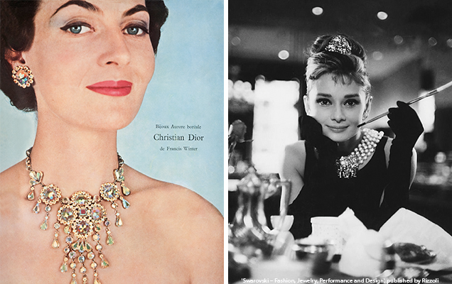

홈 > 브랜드 매거진 > 스와로브스키
스와로브스키
스와로브스키(Swarovski)는 1895년 다니엘 스와로브스키가 오스트리아 바텐스에 설립한 크리스탈 제조·럭셔리 브랜드이다.
산업 분야 패션·럭셔리 · 공개 등급 자료 기반 · 브랜드 평가 4.3 ★


한눈에 보는 브랜드
스와로브스키는 1895년 다니엘 스와로브스키가 오스트리아 티롤주 바텐스에 세운 크리스털 명가다. '모두를 위한 다이아몬드'라는 창업 철학 아래 정밀 절단 크리스털을 대중화했다.
1892년 전기 절단기 특허로 수작업 가공의 한계를 깬 것이 첫 전환점, 2021년 팝 럭셔리 리브랜딩이 두 번째 전환점이었다. 현재 140여 개국에서 약 1만8천 명이 일하며 2024년 매출 19억 600만 유로를 기록했다.
브랜드 관점
경쟁의 핵심은 소재다. 천연 다이아몬드를 다루는 고가 주얼리 하우스와 달리 스와로브스키는 정밀 컷 크리스털로 '저렴한 화려함'이라는 독자 영역을 개척했고, 참 주얼리 중심의 판도라와도 결이 다른 화려한 이벤트용 액세서리로 차별화한다.
최근 변화의 핵심은 랩그로운 다이아몬드(크리에이티드 다이아몬드)다. 2024년 이 부문 매출이 두 배 이상 늘며 5년 만의 영업흑자 전환을 이끌었고, 크리스털 브랜드가 파인 주얼리로 영토를 넓히는 신호로 읽힌다.
한국 독자에게는 두 가지가 중요하다. 첫째, 백화점과 시내·공항 면세점이 핵심 판매 무대라 가격과 환율 민감도가 크다.
둘째, 선물·예물·기념일 수요가 강해 컬렉션 출시 주기가 구매 시점을 좌우한다.
시작과 성장
19세기 말 유럽 주얼리는 보헤미아 장인의 수작업 컷에 의존했다. 보헤미아 유리 세공 가문 출신의 다니엘 스와로브스키는 1892년 전기 구동 크리스털 절단기를 특허받아 정밀 대량 가공의 길을 열었다.
그는 1895년 아르망 코스만, 프란츠 바이스와 손잡고 알프스의 수력 전기를 쓸 수 있는 티롤주 바텐스에 절단 공장을 세웠다(첫 전환점). 두 번째 전환점은 1989년 백조 엠블럼 도입으로, 지역 부품 공급사에서 소비자 브랜드로 정체성을 굳혔다.
세 번째 전환점은 2020년 조반나 엥겔베르트를 첫 글로벌 크리에이티브 디렉터로 영입하고 2021년 팔각형 백조 로고로 리브랜딩한 것이다. 국제 확장은 크리스털 부품 공급과 직영 부티크 양 축으로 진행돼, 현재 140여 개국에 매장과 유통망을 갖췄다.
브랜드 아이덴티티
브랜드 가치는 '과학이 마법을 만나는 곳', 즉 정밀 공학과 환상을 잇는 데 있다. 비주얼 아이덴티티는 세 단계로 진화했다.
에델바이스(1899~1988), 백조(1989~2021), 그리고 패싯 크리스털을 형상화한 팔각형 안의 백조(2021~ ). 사탕처럼 선명한 색채와 팔각 프레임이 패키지·부티크·디지털 화면을 하나로 묶는다.
타깃은 빛나는 화려함을 합리적 가격에 누리려는 폭넓은 소비자, 특히 선물과 자기표현을 즐기는 층이다. 브랜드 보이스는 '기쁨'과 자기표현을 앞세운 유쾌하고 대담한 팝 럭셔리 톤으로, 경영진이 강조하는 즐거움의 정서를 일관되게 드러낸다.
제품과 서비스
주력 카테고리는 주얼리(목걸이·귀걸이·팔찌·반지), 크리스털 피겨린, 워치, 액세서리, 그리고 랩그로운 크리에이티드 다이아몬드다. 시그니처로는 엔젤릭과 인피니티 라인, 하트·화살 모티프의 이딜리아, 하이퍼볼라 등이 있다.
가격은 대중 주얼리가 대체로 5만~40만 원대에 형성되며, 디즈니·이상한 나라의 앨리스 같은 한정 협업은 수천만 원대 대형 피스까지 폭이 넓다. 판매는 직영 부티크, 백화점, 면세점, 공식 온라인과 아웃렛으로 나뉜다.
현재 상태
그룹 지주사는 스위스 메넨도르프에 본사를 두며, 생산 본거지는 오스트리아 바텐스다. 5세대로 이어진 가족 소유 체제이며 CEO는 알렉시스 나사르다.
임직원은 크리스털 사업 기준 약 1만8천 명, 사업 전개 국가는 140여 개국이다. 2024년 매출은 19억 600만 유로로 전년 대비 6% 늘었고 5년 만에 영업흑자로 돌아섰다.
전 세계 매장 총수는 미공개.
타임라인
BI/CI 변천사
함께 읽을 브랜드
 패션·럭셔리 · 편집 검수롤렉스
패션·럭셔리 · 편집 검수롤렉스롤렉스(Rolex)는 스위스 제네바에 본사를 둔 럭셔리 시계 제조사이다.
오메가(OMEGA)는 스위스 스와치 그룹 산하의 럭셔리 시계 제조 브랜드이다.
 패션·럭셔리 · 편집 검수디젤
패션·럭셔리 · 편집 검수디젤디젤(Diesel)은 1978년 렌조 로소가 이탈리아 브레간체에서 설립한 데님 중심의 컨템포러리 패션 브랜드다. 도발적이고 실험적인 디자인으로 데님 헤리티지를 재해석...
H&M(Hennes & Mauritz)은 스웨덴에 본사를 둔 다국적 패스트패션 의류 기업이다.
 패션·럭셔리 · 자료 기반몽클레르
패션·럭셔리 · 자료 기반몽클레르몽클레르(Moncler)는 1952년 프랑스에서 설립돼 현재 이탈리아에 본사를 둔 럭셔리 다운재킷 브랜드이다.
Sa
Sarah & Sebastian
패션·럭셔리 · 편집 검수Sarah & SebastianSarah & Sebastian는 2025년에 기록된 Fashion 계열의 브랜드 아이덴티티 사례입니다. Made Thought가 아이덴티티 작업의 디자이너로 기록되...
 패션·럭셔리 · 자료 기반태그호이어
패션·럭셔리 · 자료 기반태그호이어태그호이어(TAG Heuer)는 1860년 에두아르 호이어가 설립한 스위스 고급 시계 제조사이다.
 패션·럭셔리 · 매거진 완성몽블랑
패션·럭셔리 · 매거진 완성몽블랑몽블랑은 필기구를 기록의 도구에서 성취와 품격의 상징으로 끌어올린 브랜드다. 만년필은 기능 제품이지만, 브랜드가 축적한 이미지는 서명, 의사결정, 지적 권위 같은 장...